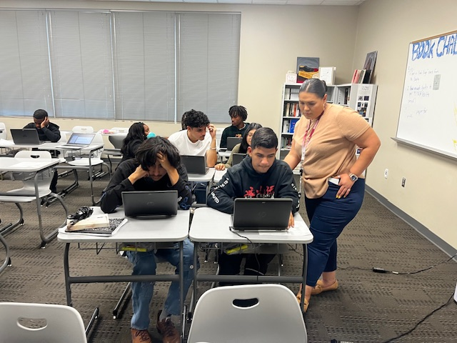

Crafting and Educating Nyissa's Inspiring Journey
Discover Nyissa's passion for crafting and her dedication to guiding students in their educational journeys, all while balancing her love for her family.
Crafting and Guiding Students: Nyissa's Story
Learn more about Nyissa's journey as a crafter and educator, and how she balances her passion for crafting with her dedication to guiding students in their educational journeys.
Passion
Crafting: A Creative Outlet that Fuels Nyissa's imagination and Inspires Others
Guidance
Empowering Students: Nyissa's Dedication to Helping Them Achieve Their Educational Goals
Key Highlights
- Empathy and Expertise
- Leadership and Teamwork
- Communication and Creativity

Inspiring Students to Reach Their Full Potential
Nyissa is dedicated to guiding students on their educational journeys, helping them discover their passions and achieve their goals. With her expertise and passion for education, she creates a nurturing environment where students can thrive and succeed.
Crafting and Guiding Students Towards Success
Nyissa is a career/college advisor who is passionate about crafting, education, and her family. With her dedication and creativity, she guides students on their educational journeys while also finding joy in her own crafting projects.